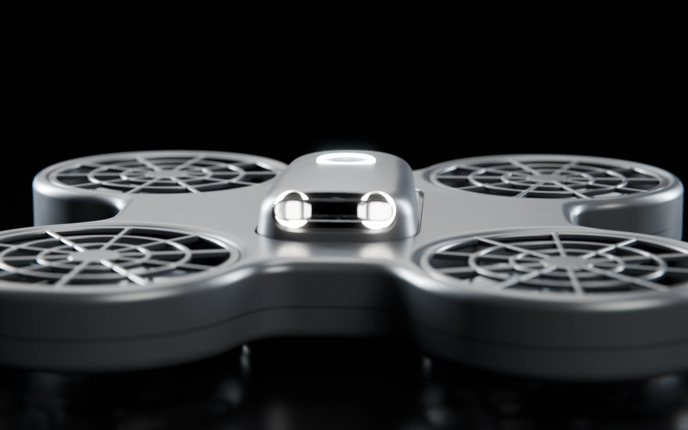
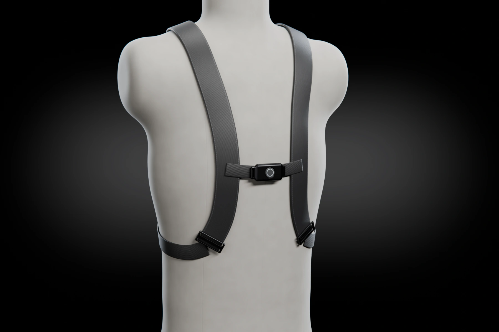
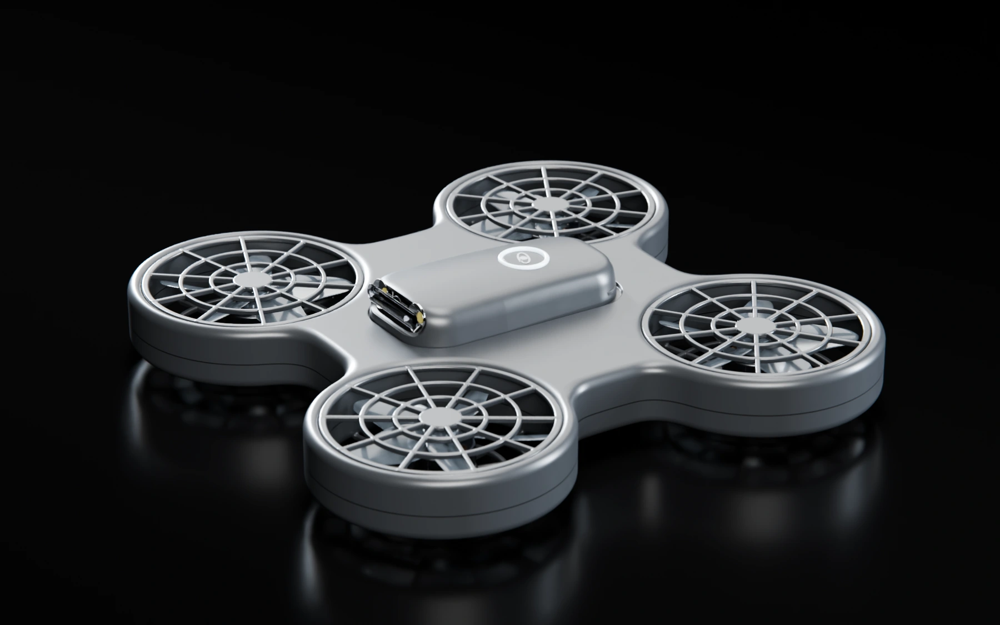

Orbit
A steady circle at eye level, half a meter out. The default, because the beam never leaves the eyes.
How Wisp gets from between your shoulder blades to the attacker's eyes, and how it keeps the light there while you leave.

Everything between the press and the light on the attacker's face happens on board, in under three seconds.
Design targets for the W1 prototype, from the press of the clasp.
A light that sits still is easy to block. Orbit keeps Wisp moving between six flight patterns, and every one of them holds the beam on the eyes.
A steady circle at eye level, half a meter out. The default, because the beam never leaves the eyes.
Crosses in front of the face twice a cycle, so the light sweeps through the line of sight from both sides.
Holds still, then jumps to a new angle. Hard to follow and harder to swat. Orbit switches to it when a hand comes up.
Circles above the head and lights the eyes from above, out of reach of a raised arm.
Reverses direction and sweeps up and down, breaking any rhythm the attacker tries to learn.
Backs off to 0.8 m and varies its speed. Used while the wearer moves away.
Plots are top-down. The attacker faces down the page; the amber wedge is their line of sight.
Wisp doesn't classify people or judge intent. The wearer makes that call by pressing the clasp. After that, Orbit has one job: find the face turned toward the wearer and keep light on it.

Silk · frontThe clasp on the sternum strap is the only control. Press it firmly to launch. Press again to change target. Hold it to call Wisp back.
Four minutes is longer than almost any confrontation lasts. The pack is sized for a full deployment at full light, plus enough to come home.
Design estimates for one deployment. Measured endurance will be published with test results.

Every system on this page in one encounter, blocked out as a real-time previs. Ride along in the drone's camera.
Watch the previs